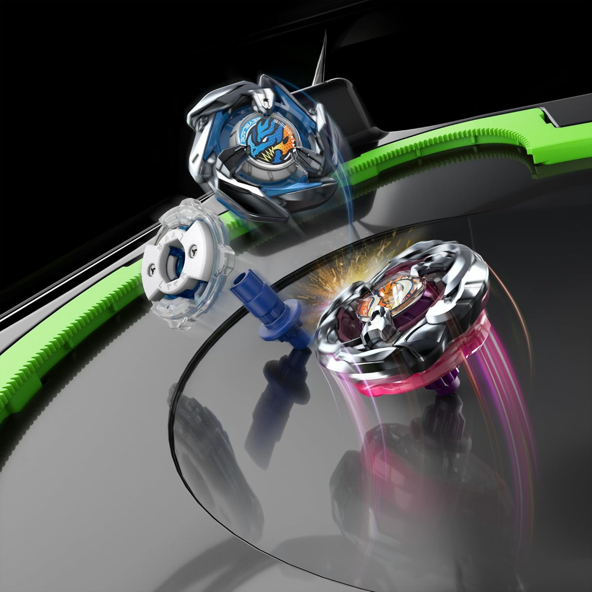
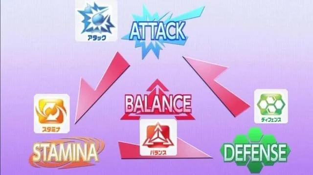

Every Beyblade series revolves around a core mechanical or structural feature. These signature gimmicks define how the toys battle and perform in the stadium.
| Generation | Main Gimmick | Details |
|---|---|---|
| Original Beyblade | Engine Gear / Customize System | Beyblades utilized gear-based engines that would release a burst of speed or change movement patterns mid-battle. Later subsystems (Heavy Metal System) introduced smaller, heavier, and more refined customizable metal parts. |
| Metal Saga | Multi-layered Assembly & Spin Tracks | The toyline shifted to heavier metal-on-metal combat. Beys were built with five distinct parts: a Face Bolt, Energy Ring, Metal Fusion Wheel, Spin Track (varying height/weight), and Performance Tip. Tips featured advanced mechanisms like free-spinning, metal balls, and height-switching. |
| Beyblade Burst | Burst System & Specialized Layers | The core feature is the "Burst" mechanic. Beys physically break apart into pieces when taking heavy impacts during battle. Later iterations of this era introduced spring-loaded teeth, interchangeable frames, chassis, and expanding blades. |
| Beyblade X | Xtreme Gear Sports (X-Dash) | The current system centers around the "X-Dash" gimmick. The Beyblade's Performance Tip features a specialized flat gear that engages with a notched rail on the stadium floor, allowing the top to accelerate to extreme speeds for knockout finishes. |

Beyblades are primarily categorized into four distinct types, each defined by its weight distribution, shape, and performance tip. These core archetypes are Attack, Defense, Stamina, and Balance.
| Type | Description | Strengths | Weaknesses |
|---|---|---|---|
| Attack Types |
Attack-type Beyblades are built for speed and aggression. They feature flat or heavily textured tips that allow them to zip aggressively around the stadium. Their primary strategy is to score a quick knockout (KO) or to "burst" the opponent's Beyblade through high-impact collisions early in the match. | Powerful strikes and fast movement. | They burn through spin velocity quickly and are vulnerable to stamina types. |
| Defense Types |
Defense-type Beyblades are designed to withstand heavy hits and outlast aggressive opponents. They are usually heavier, wider, and feature smooth, circular layers to deflect attacks. Their wider tips keep them firmly planted in the center of the stadium, absorbing impacts rather than dodging them. | Can absorb brutal attacks and stay stable during collisions, dishing out counterattacks better than other types. | Can be easily knocked out by heavier Attack types and often lack the stamina to outlast Stamina types. |
| Stamina Types |
Stamina-type Beyblades are engineered to spin longer than any other type. They feature sharp, pointed tips that minimize friction with the stadium floor. Many also boast aerodynamic, circular designs to reduce wind resistance, helping them conserve energy. | Can out-spin Defense types and easily recover from early collisions. | Highly vulnerable to Attack types, as they can be easily knocked out before their superior spin time comes into play. |
| Balance Types |
Balance-type Beyblades offer a hybrid of the other three categories. By customizing parts like the forge disc, ratchets, and performance tips, bladers can configure these tops to lean more toward attack, defense, or stamina. | Highly adaptable and unpredictable, making them excellent for adjusting to an opponent's strategy. | Because they are generalists, they can be easily outclassed by specialized Attack, Defense, or Stamina types in their respective strengths. |
Beyblade can be played casually or competitively. Casual play is usually simple: friends battle in a stadium, test different Beyblade combinations, and play for fun without worrying too much about official rules.
Competitive play is more structured. Players usually follow specific rules about legal parts, stadiums, launchers, match formats, scoring, and how many Beyblades they can use.
Some tournaments also use deck-based formats, where players bring multiple Beyblades and have to think carefully about matchups, strategy, and part combinations.
One of the biggest fan-run competitive communities is the World Beyblade Organization, also known as the WBO. The WBO is a volunteer-run project that has supported competitive Beyblade since 2008, and it is not officially connected to Takara Tomy, Hasbro, or other Beyblade license holders.
It provides rulebooks, tournament resources, rankings, forums, and event listings for players around the world.
Events listed through the WBO are usually hosted by independent organizers, while the website helps connect players, organize tournaments, and give the community a shared place for competitive Beyblade.
Because of groups like the WBO, Beyblade can be more than just a toy or anime series; it can also be treated like a real competitive hobby with rules, practice, teamwork, and strategy.